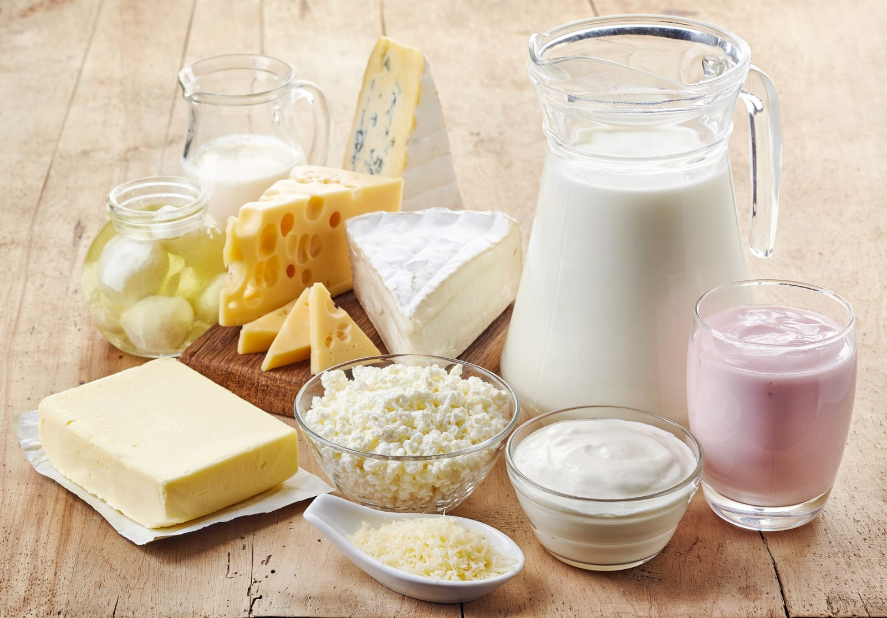
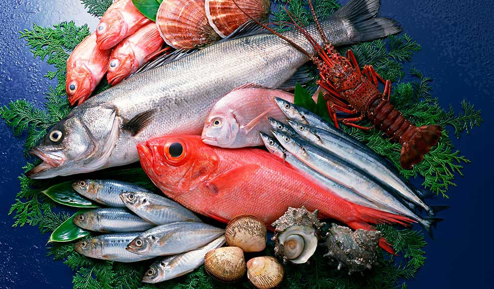
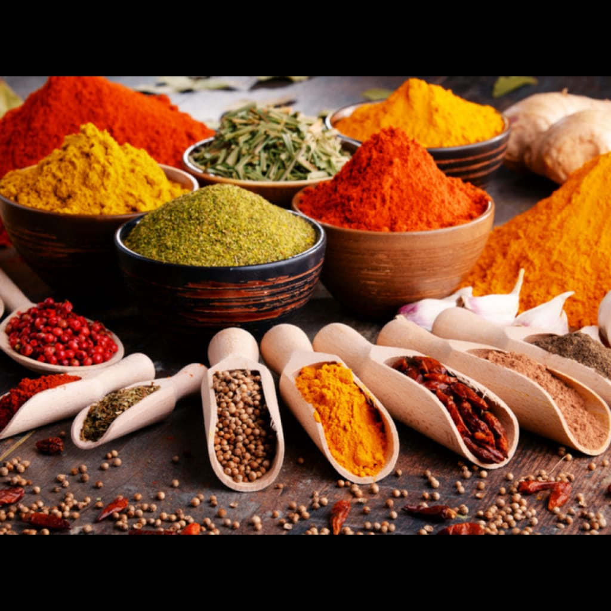
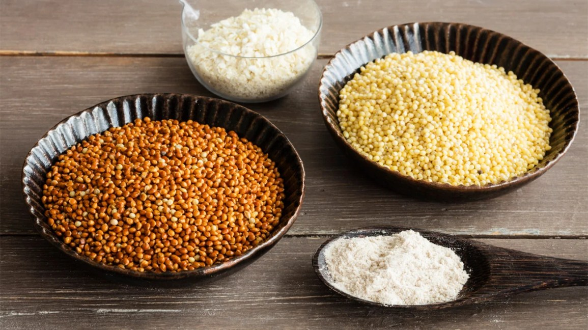
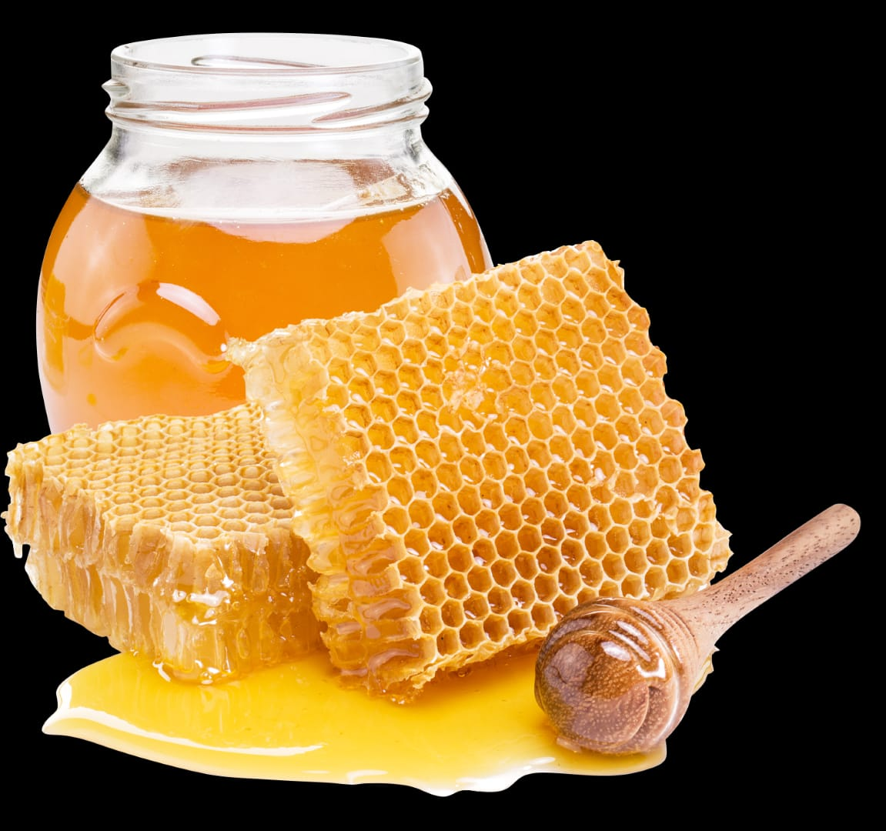

District-Wise Selected Products
Anantnag

Anantnag, blessed with abundant water resources, specializes in producing a delightful array of fish-based products. From succulent fish fillets to tantalizing smoked fish,the istrict is renowned for its delectable fish pickles. The locals skillfully craft these products, enhancing the region's culinary offerings and providing a taste of the aquatic bounty.
Bandipora

Bandipora, nestled in the picturesque Kashmir Valley, is celebrated for its high-quality poultry and mutton products. The district ensures a ready supply of fresh and succulent meat, meeting the demands of meat enthusiasts. Additionally, Bandipora takes pride in its orchards, producing a variety of apple-based products, including jams, juices, and preserves, showcasing the region's love for this beloved fruit.
Baramulla

Baramulla is a dairy hub, offering a wide range of milk-based products. The district's dairy industry yields an array of dairy delights, from creamy cheese to wholesome yogurt and rich butter. The quality and freshness of these milk-based offerings have made Baramulla a favored destination for dairy aficionados.
Budgam
Budgam, nestled in the heart of Kashmir, is renowned for its dairy production. The district excels in crafting an assortment of milk-based products that cater to various tastes and preferences. The locally sourced milk forms the basis for a variety of offerings, ensuring a steady supply of dairy goodness to the community.
Doda

Doda, blessed with an ideal climate for olives, specializes in producing premium olive products. The district is known for its cold-pressed olive oil, pickled olives, and a range of olive-based condiments. These products not only add flavor to local cuisine but also contribute to the region's culinary heritage.
Ganderbal
Ganderbal, surrounded by serene lakes and rivers, boasts a thriving fish-based product industry. The district offers a diverse range of fish-related delicacies, ranging from fresh fillets to delightful fish pickles. Ganderbal's fish products showcase the richness of its aquatic resources and add a distinctive flavor to the local gastronomy.
Jammu
Jammu, known for its pastoral landscapes, is a hub for milk-based products. The district's dairy industry thrives, providing an extensive range of dairy delights. From the traditional favorites like paneer to the richness of ghee, Jammu's milk-based offerings are cherished by locals and visitors alike.
Kathua

Kathua is synonymous with aromatic spices that grace the region's culinary delights. The district is celebrated for its bountiful spice production, ranging from vibrant red chilies to aromatic cardamom. These spices not only enhance the taste of local dishes but also contribute to the distinct flavors of Kashmiri cuisine.
Kishtwar

Kishtwar, blessed with abundant walnut orchards, is renowned for its superior-quality walnut products. The district's skilled artisans produce premium walnut kernels, walnut oil, and an assortment of walnut-based sweets and desserts. These products embody the region's love for walnuts and their versatile use in traditional recipes.
Kupwara

Kupwara, a region blessed with fertile lands, is a hub for high-quality walnut products. The district's expertise lies in processing walnut kernels, walnut oil, and an array of walnut-based delicacies. Kupwara's walnut offerings are a testament to the region's culinary heritage and appreciation for this nutritious nut.
Kulgam
Kulgam is a spice and pickle haven, offering an aromatic array of spices and flavorful pickles. The district's diverse spice production, including a blend of pungent and aromatic spices, elevates the taste of local dishes. Additionally, the carefully crafted pickles add a tangy zest to the culinary delights of the region.
Poonch
Poonch prides itself on its millet-based products, showcasing the rich agricultural heritage of the region. The district produces a variety of millet-based products, including millet flour and an assortment of traditional dishes. Poonch's millet offerings not only contribute to a healthy diet but also preserve the culinary traditions of the area.
Pulwama

Pulwama, known for its fertile lands and picturesque vistas, is a significant contributor to the dairy industry. The district specializes in an array of milk-based products, ensuring a steady supply of fresh dairy essentials to meet local demands. From creamy desserts to wholesome dairy treats, Pulwama caters to the dairy preferences of its residents.
Rajouri
Rajouri, nestled amidst the majestic mountains, prides itself on its dairy offerings. The district is a hub for milk-based products, delivering a range of creamy delights to the local community. The quality and richness of Rajouri's dairy products have earned them a cherished place in the hearts and palates of the residents.
Ramban
Ramban is renowned for its pure and natural honey, harvested from the diverse flora of the region. The district's honey is known for its exquisite taste, representing the distinct flavors of the local flora. Ramban's honey is not only a culinary delight but also a source of health benefits, enjoyed by both locals and visitors.
Reasi

Reasi is a spice paradise, renowned for its aromatic and flavorful spices. The district's spice production includes an array of spices that lend a distinctive taste and aroma to Kashmiri cuisine. These spices are an essential part of local cooking, infusing every dish with a burst of flavors.
Samba
Samba, with its favorable climate and soil conditions, excels in mushroom cultivation. The district specializes in mushroom products, offering a variety of mushroom-based dishes, preserves, and sauces. Samba's mushroom products cater to both the local market and beyond, showcasing the versatility and culinary potential of mushrooms.
Shopian

Shopian, known as the 'Appple Bowl of India', is a haven for apple-based products. The district produces a wide range of apple delights, including apple pies, refreshing cider, and an assortment of apple-based sweets. Shopian's apple products embody the region's love for this luscious fruit and are a true delight for apple enthusiasts.
Srinagar

Srinagar, the summer capital of Jammu and Kashmir, is a hub for delectable bakery products. The district offers an array of freshly baked goods, from soft bread to mouth-watering pastries and traditional Kashmiri bakery items. Srinagar's bakeries infuse a blend of local flavors and international techniques, creating a delightful culinary experience.
Udhampur

Udhampur, although specific products were not provided, likely boasts a range of local specialties. The district's unique offerings could include diverse agricultural products, handicrafts, or other regional delights that reflect the cultural richness and traditions of the area. Further exploration would reveal the distinctiveness of Udhampur's local products.